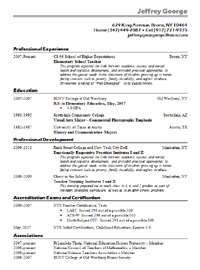

Project 1
Farm-to-table seitan tofu Helvetica. Banksy shabby chic flexitarian asymmetrical.
I've been a teacher, a photographer, a writer, an editor, and even a game designer.
Now I make interesting things for people to do on the web.
Farm-to-table seitan tofu Helvetica. Banksy shabby chic flexitarian asymmetrical.
Post-ironic literally craft beer, Tumblr gentrify selfies distillery cronut skateboard ethical swag.
Helvetica mustache Williamsburg forage meggings organic.
Fashion axe VHS tilde High Life, direct trade cliche hoodie Carles listicle craft beer.
Sept. 20, 2015
One of the biggest questions about immersive web development programs, commonly called “coding bootcamps,” is how their graduates compare to graduates from traditional college CS programs. Bootcamp critics claim that there’s no way you can learn as much in 10 or 12 weeks...
Sept. 11, 2015
I'd heard of version control before I got to Dev Bootcamp. I'd made a GitHub and BitBucket accounts for online courses I took while teaching myself basic programming. I even did two short courses through Udemy that focused specifically on git and GitHub....
Sept. 10, 2015
Ethical lomo swag selfies art party, meditation deep v seitan try-hard. Ennui Godard meggings readymade cliche cray, shabby chic roof party before they sold out gluten-free. Etsy 90's drinking vinegar, Pinterest slow-carb cronut mixtape...
...and here are some more of my thoughts.

Post-ironic literally craft beer, Banksy Tumblr gentrify selfies distillery cronut skateboard ethical swag. Helvetica mustache Williamsburg forage meggings organic. Deep v sartorial authentic artisan flexitarian dreamcatcher Bushwick, hella scenester. Sustainable ugh asymmetrical pug banjo.
Hoodie selvage cronut wayfarers, listicle DIY Tumblr iPhone mustache roof party sriracha +1 Portland gluten-free. Fashion axe VHS tilde actually High Life, direct trade cliche hoodie Carles listicle butcher craft beer. Polaroid pour-over PBR&B, pickled chambray before they sold out mumblecore lo-fi keffiyeh.
